基于聚类算法的学生成绩分析与研究
数据样本数
特征维度
可视化图表
学生群体
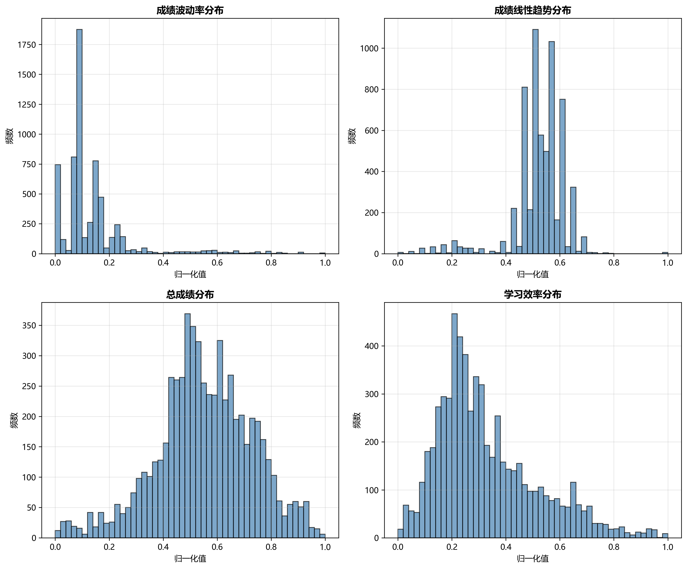
展示成绩波动率、线性趋势、总成绩、学习效率四个衍生特征的分布情况
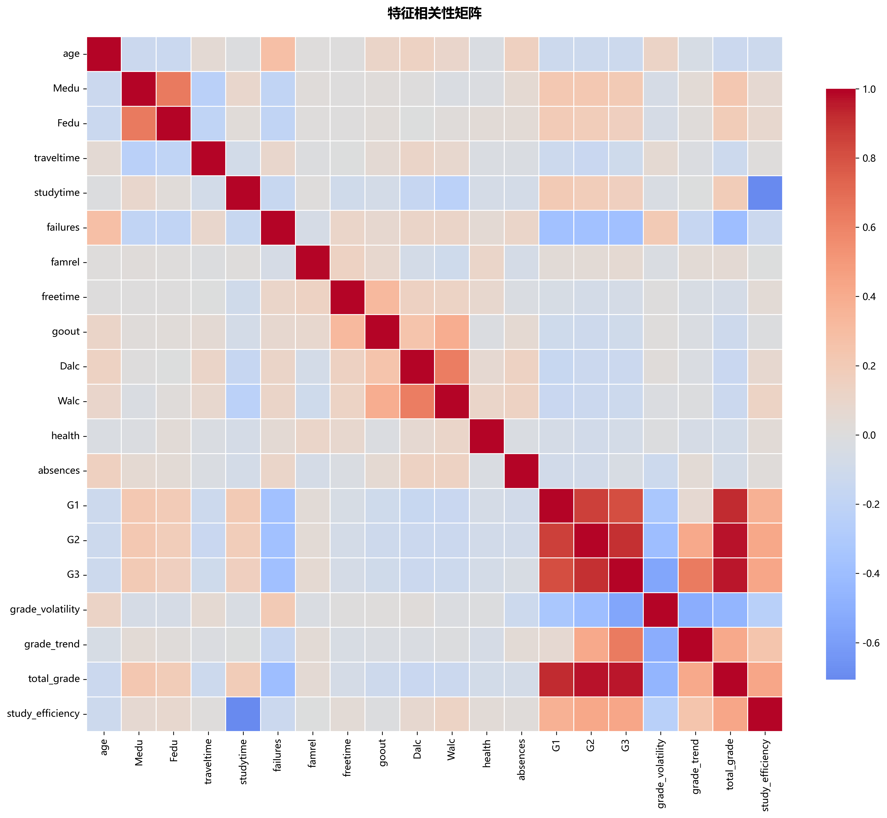
20 个特征之间的相关性热力图，用于分析特征间的关联关系
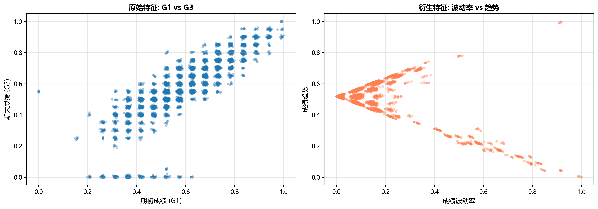
左图：原始特征 G1 vs G3；右图：衍生特征 波动率 vs 趋势
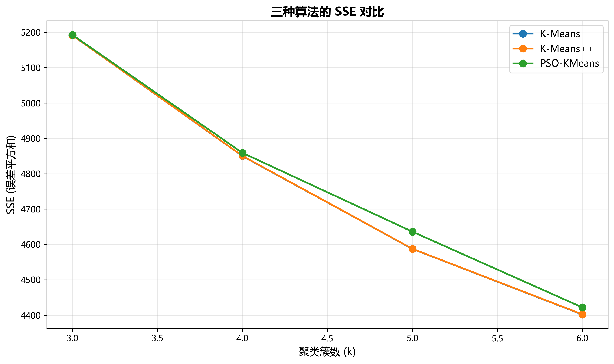
K-Means、K-Means++、PSO-KMeans 在不同 k 值下的误差平方和对比
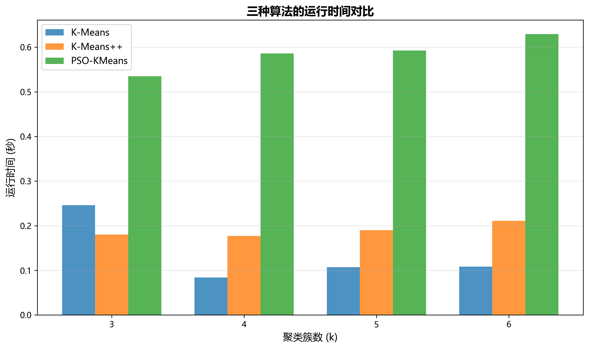
三种算法的运行效率对比，PSO-KMeans 在 0.5-0.6 秒内完成
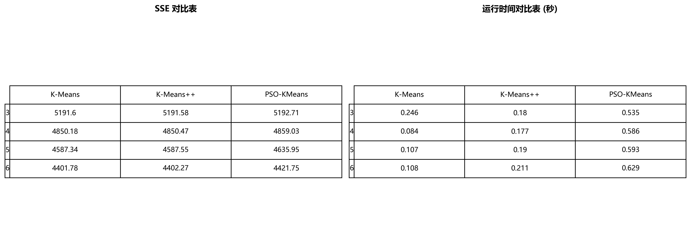
SSE 和运行时间的数值化对比，便于论文引用
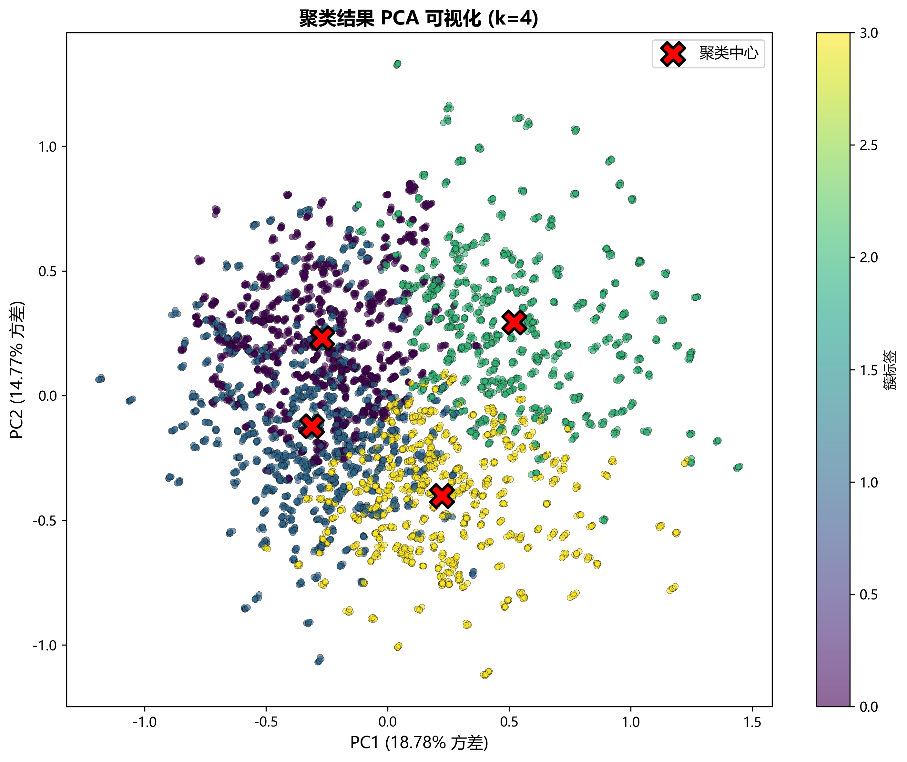
将 20 维数据降至 2 维，展示 4 个聚类簇的分布，红色 X 为聚类中心
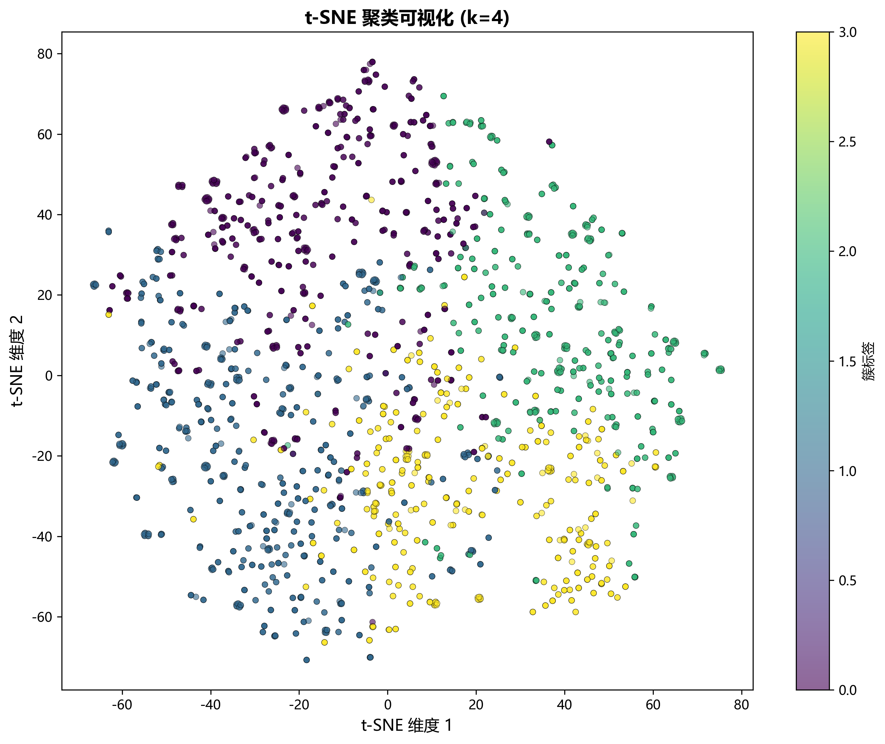
非线性降维，更好地展示簇的分离度和聚类效果
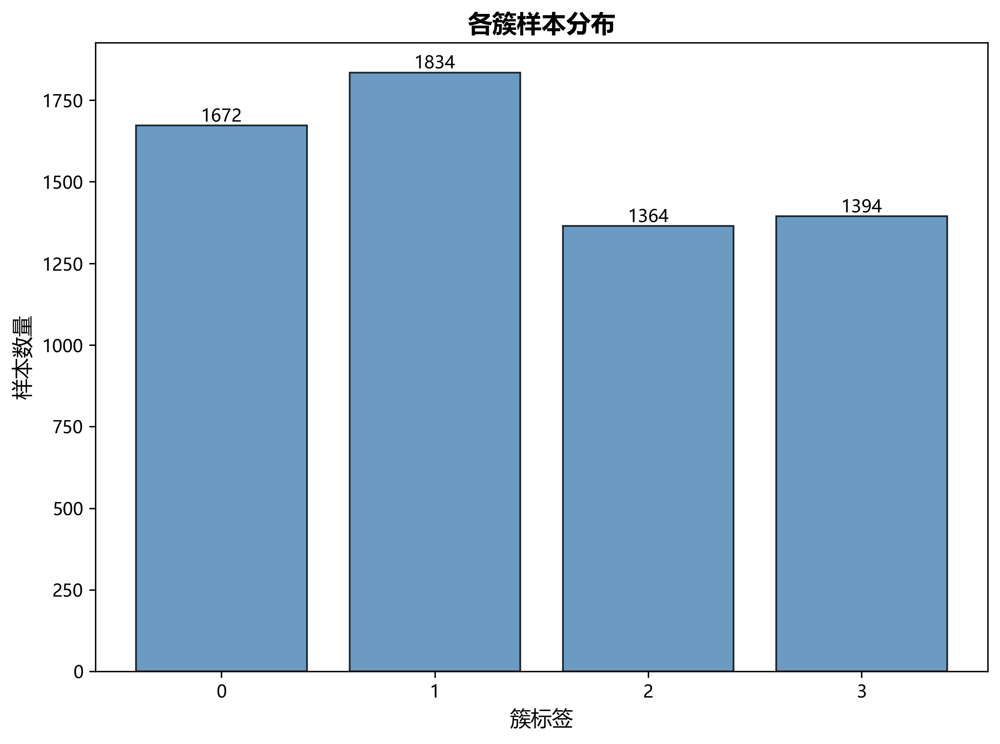
各簇的样本数量分布，验证数据平衡性
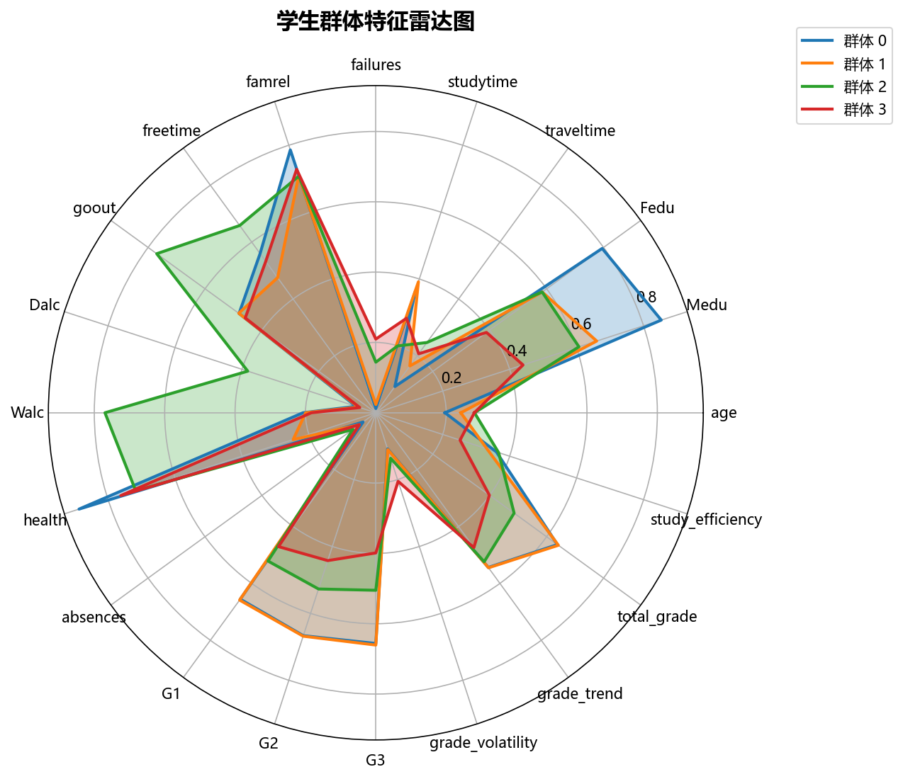
4 个学生群体的多维特征对比，直观展示各群体的优势和短板
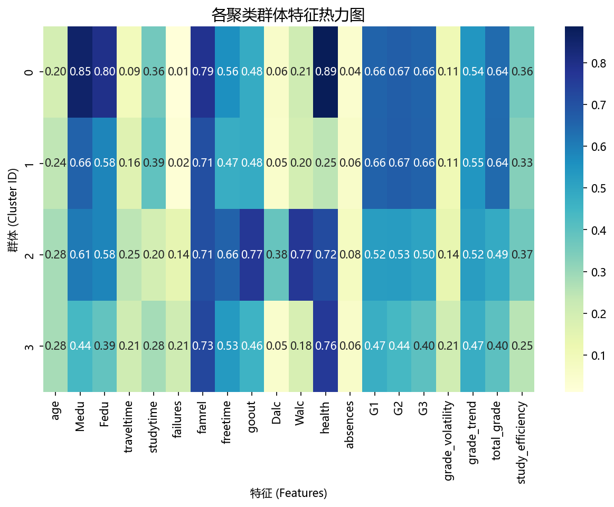
聚类中心的特征强度，颜色深浅表示特征值大小
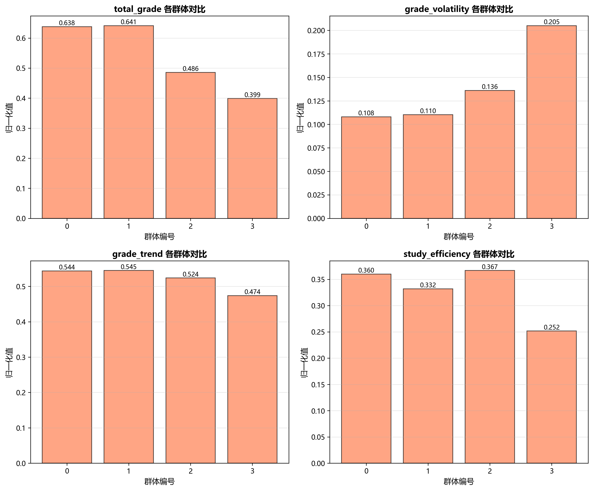
总成绩、波动率、趋势、学习效率在各群体的对比
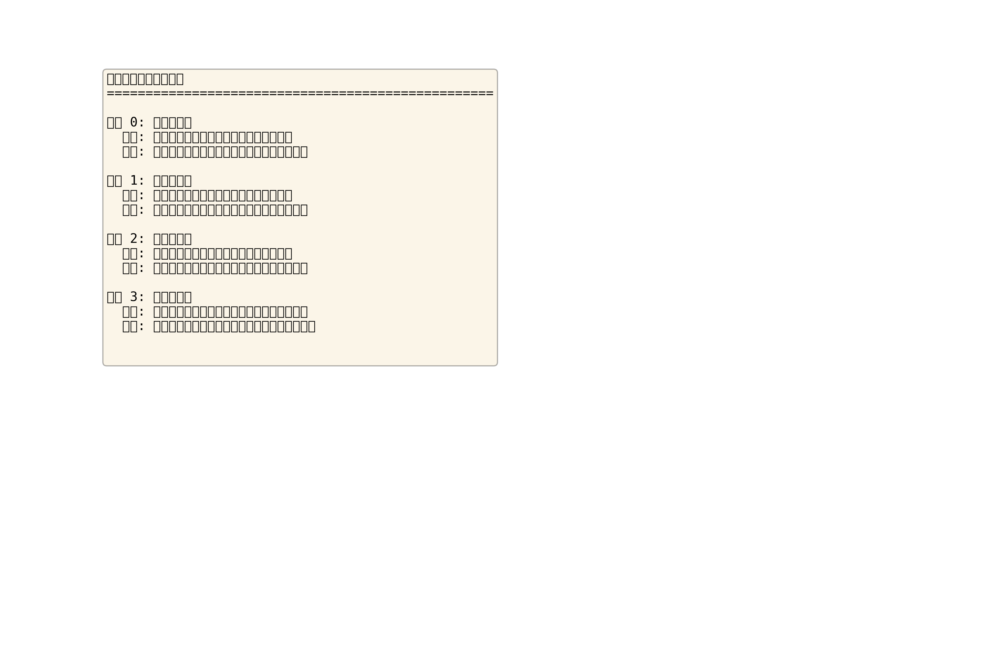
自动生成的学业诊断文本，包含群体标签、画像描述、教学建议
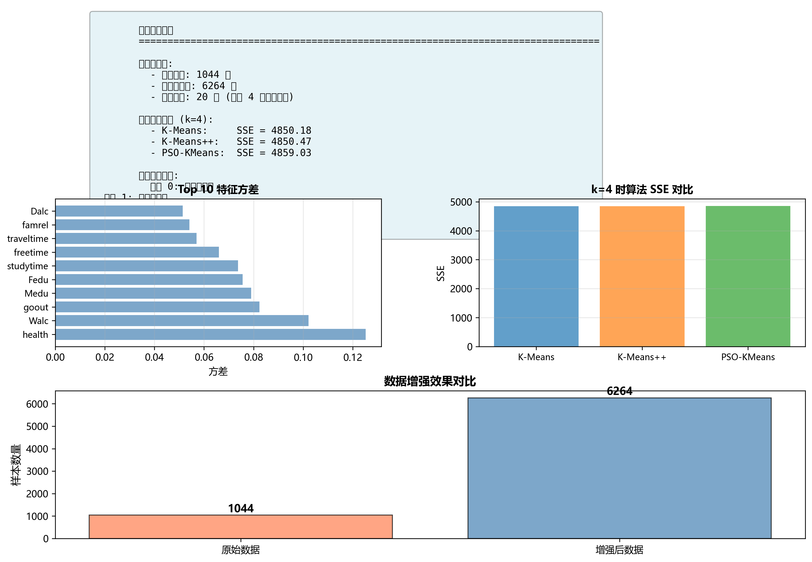
综合性总结，包含数据概览、算法对比、特征重要性等关键信息